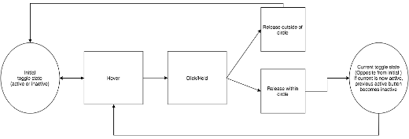

Typical Appearance
Radio buttons are usually circular in appearance and are accompanied to the right with a text label describing the given option. They are often accompanied with a series of other radio buttons that have some answer to the general question of choice given to the user (ex: The question "What is your favorite color?" with the radio buttons being an assortment of different colors). When inactive, the circles are not colored in, giving it an "empty" look to suggest that it is not currently active. When active, a dot concentric to the circle or an entirely different color to the background color of an empty button "fills" the circle, indicating that it is currently chosen.
Variants

menu items: buttons like the picture above that bring down submenus could be considered a variation of a radio button in that only one can be toggled (to expand the submenu) once at a time. However conceptually-speaking, radio buttons focus more on status (ex: the background is red and not blue) rather than actions (ex: pressing a button to access a submenu for background color) so menu buttons are not necessarily identified as a radio button.


menu list: this variation presents itself as a list instead of circular buttons. Instead of "filling" in the circle to make a decision, the user clicks on the label itself (usually colored differently when hovered over). Another variation of this is the select box which is like the menu list but requires the user to press a separate select button in order to click their choice.

segmented control: instead of circles, they are fashioned more like tabs. This is more in the vein of actual physical radio buttons on a radio -- in that it is clear that they belong in the same group but their actions are exclusive from one another. The only fault of these is that they do not allow for much text space on the labels.

radio buttons with multiple buttons clicked simultaneously: like a regular series of radio buttons but a special case in that a user can click multiple buttons instead of just the one. It is debatable whether this fits the criteria of the radio button. The appearance is largely the same but its function (multiple instead of toggling exclusively one) is different.
Priority Metrics
All metrics are important because radio buttons appear quite universally seeing as how interaction with user and system is constant. Presenting choices are often in the form of radio buttons.
- Learnability and memorability: Etymologically radio buttons refer to the pop-up buttons on radios used to control its functions. When one button is pressed in, it remained pressed in and the rest popped out. This concept is known even by people with no technological experience. So long as the feedback from system to user is clear, learnability and memorability should be consistently high.
- Efficiency: This depends entirely on the layout of the buttons and their distance from one another. However, generally speaking, radio buttons are pretty efficient in presenting choices since it only requires the user to read the label and click the button -- a two-step process.
- Errors: Like efficiency, this relies on aesthetics and feedback response (see 'Key Characteristics' for more information). But since learnability and memorability is high, errors should be highly unlikely.
- Satisfaction: Since radio buttons serve a more functional purpose rather than one for enjoyment, satisfaction does not have as much importance as the other metrics. But satisfaction can be derived from a straightforward and error-free experience with making choices using radio buttons.
Typical Behavior
Just like with a general button, a radio button's behavior is solely dependent on whether the user has pressed/toggled it or not. This is usually done via the pointer/cursor but can also be done with keyboard inputs.
The active/inactive state of a radio button is dependent on the active/inactive state of the other related radio buttons. The active state is exclusive to one radio button at a time (i.e. two radio buttons cannot be active simultaneously).
Disabled buttons have their circle and/or corresponding text grayed out.
When accessing via keyboard inputs using the tab button, a radio button is surrounded by a dotted square or border to indicate that it is currently the one in selection.
Events
hover: when the pointer/cursor is within the area of the circle. Most do not display behavior during this event but some radio buttons do cast a shadow within the circle to indicate that it is currently being interacted with regardless on whether it is clicked or not.selected: occurs strictly when user is operating through keyboards input. Pressing the tab key scrolls through all the optional clickables and since radio buttons are grouped together they are always considered one element. To scroll through the choices of radio buttons, the user must use the directional buttons on the keyboard (up and down).click + hold: a user can click on a radio button (pressing within the vicinity of the circle or the label) and prevent it from being toggled by dragging and releasing the cursor away from the vicinity of the cursor. This event cannot occur using keyboard inputs.click + release: a user can press within the vicinity of the circle or the label and immediately release it to toggle the button. In the context of keyboard inputs, once a button is selected, pressing the enter key is the equivalent of clicking it with a cursor.disabled: a disabled button provides no response when it is clicked on. Everything remains the same indicating to the user that nothing has changed. Sometimes a cancel icon takes the place of the cursor indicating that it cannot be clicked.
State Diagram
Component in Action

Pictured above is a depiction of a user picking between two radio buttons in a constant loop between inactive, click and active. As you can see buttons can be toggled if labels are clicked as well. Pictured below is a live demonstration of a radio button as developed by Bootstrap.
Key Characteristics
Radio buttons' metrics are entirely dependent on their aesthetics and the system's feedback to the user. So it is important that both of these are adjusted to provide the most error-free and least complicated process for the user.
- An interesting feature, which can either be advantageous or detrimental depending on the argument, is that radio buttons cannot be rendered inactive ("turned off") without having to render another button active ("turned on"). This can be advantageous if the system absolutely requires the user to make a choice no matter what. But this can be detrimental if making a choice is not necessary and the user will have to reset the screen so as to clear the changes.
click: button should toggle upon clicking within the vicinity of the circle and the accompanying label itself.disabledbuttons should have their circles and labels be grayed out or at least a shade lighter than the default font color of a non-disabled button.- There should be a clear difference between the outer circle and its inner concentric circle (active vs inactive button) to explicitly indicate whether or not it is "filled" or "empty".
- If there are multiple radio buttons in different categories in the same screen, they should be clearly separated in their respective groups with either a border, line break, or label. If necessary, they must be put into a separate screen.
- In some cases, a common problem of the radio button's is its lack of feedback depending on its function. For example, a radio button deciding whether the background is in color or b&w should immediately have the background be changed according to which radio button. However there are some functions in which feedback is not readily apparent.
hover: some radio buttons change color upon hovering but this is redundant especially since the circle itself is small. The cursor shoulddisabled: upon hovering, an optional but welcomed feature of accompanying a 'cancel' icon with the cursor will stress that it cannot be interacted with.click + hold: radio buttons should have the feature of canceling out a click if the user drags their cursor away and releases it in another space to prevent mistaken clicks.click: when clicking a button, the circle should change in color (to a darker shade) in order to reflect its transient stage between being inactive and active.